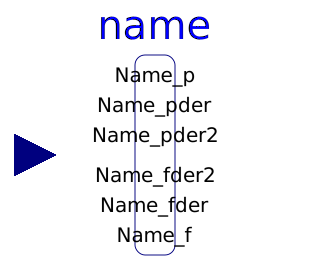
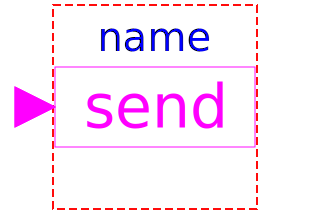

This package contains partial adaptors to implement adaptors in various domains between a physical connector and a signal representation of the connector signals. This component is used to provide a pure signal interface around a physical model and export this model in form of an input/output block, especially as FMU (Functional Mock-up Unit).
| Name | Description |
|---|---|
|  FlowToPotentialAdaptor | Signal adaptor for a connector with flow, 1st derivative of flow, and 2nd derivative of flow as inputs and potential, 1st derivative of potential, and 2nd derivative of potential as outputs (especially useful for FMUs) |
| Signal adaptor for a connector with potential, 1st derivative of potential, and 2nd derivative of potential as inputs and flow, 1st derivative of flow, and 2nd derivative of flow as outputs (especially useful for FMUs) | |
| Functions for adaptors | |
| Obsolete block to send Real signal to bus | |
|  SendBoolean | Obsolete block to send Boolean signal to bus |
| Obsolete block to send Integer signal to bus | |
| Obsolete block to receive Real signal from bus | |
| Obsolete block to receive Boolean signal from bus | |
| Obsolete block to receive Integer signal from bus |